11 projects across embedded systems, hardware, FPGA, networking, and game dev.
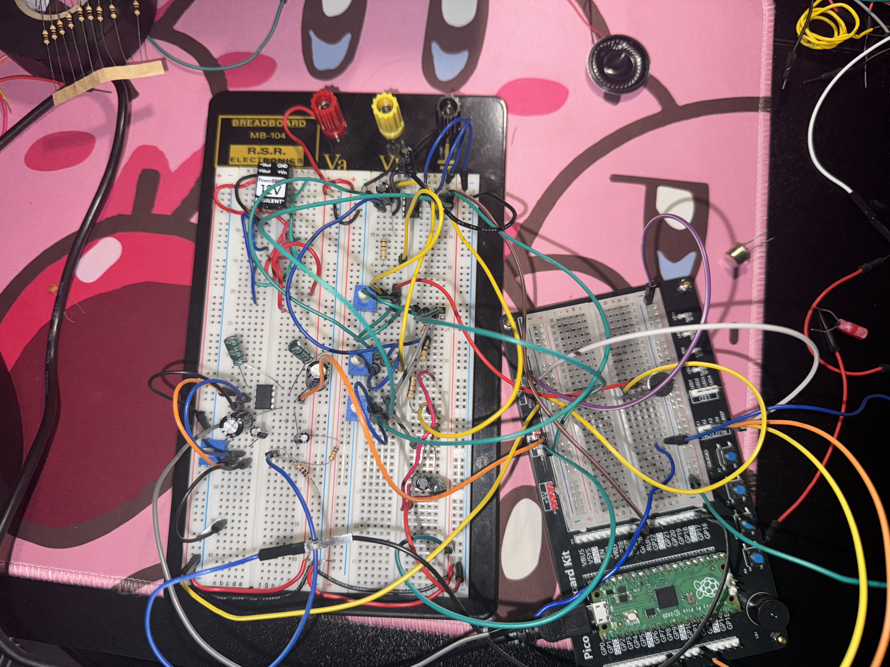
Standalone voice recorder built on Raspberry Pi Pico and programmed entirely in ARM Assembly. Records up to 3 seconds of audio via microphone through the ADC at 22,050 Hz, stores it in RAM, and plays it back through an LM386-amplified speaker via PWM output. LED indicators and push buttons handle record, playback, and power status.
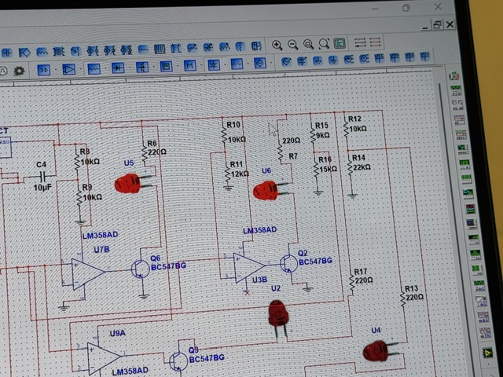
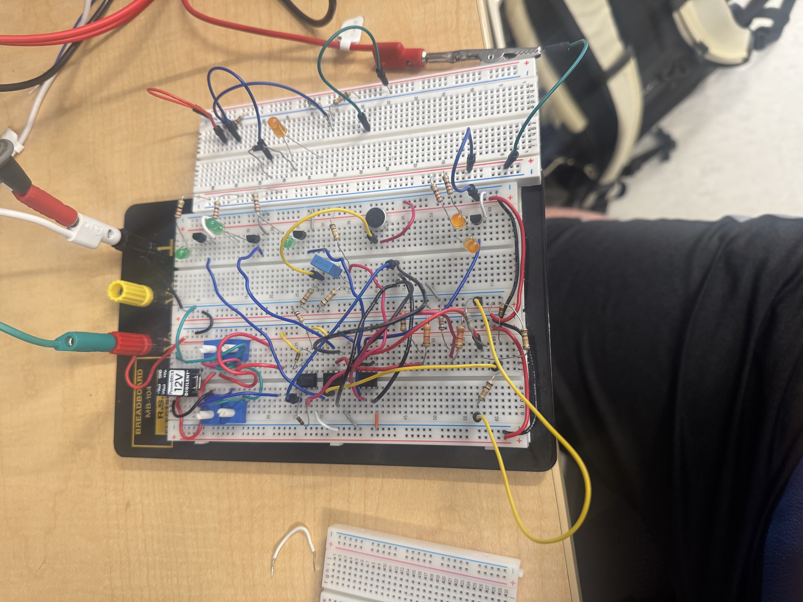
Analog circuit that detects wind intensity and activates LEDs and a buzzer at different thresholds. Built and simulated in Multisim using LM358 op-amps as comparators. Designed, built, and benchmarked independently from schematic to working hardware.
Cooperative real-time task scheduler implemented in C/C++ on an AVR microcontroller (Arduino Uno). Designed scheduling logic, timing counters, and task switching for 3 concurrent tasks of different CPU loads. Implemented CPU load measurement to monitor system performance under stress scenarios.
Arduino Mega 2560 system that maps microphone input to 4 PWM motor speed levels via an L293D driver. A pushbutton toggles motor direction between clockwise and counterclockwise. A DS1307 RTC and LCD display real-time clock alongside motor speed and direction — updated every second via timer interrupt.
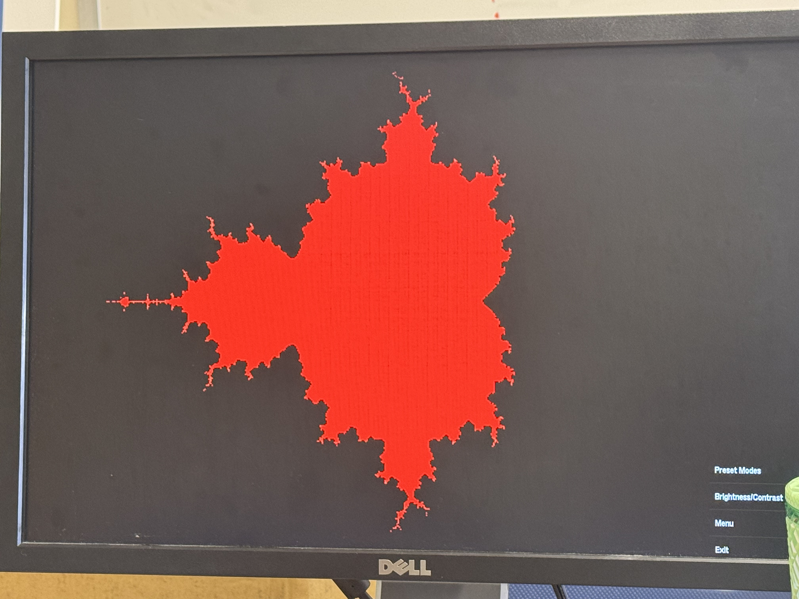
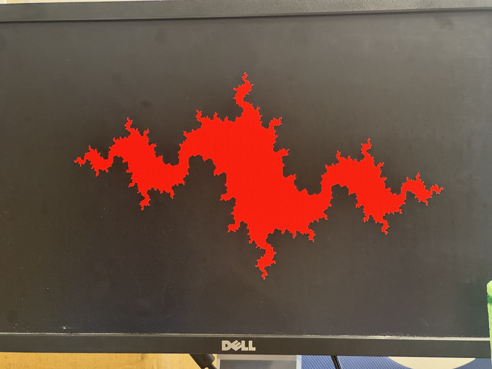
Real-time fractal generator implemented on an FPGA board using VHDL. Renders Mandelbrot and Julia sets directly to an external monitor via VGA output. Demonstrates how hardware description languages can implement mathematically intensive graphics computation at the hardware level.
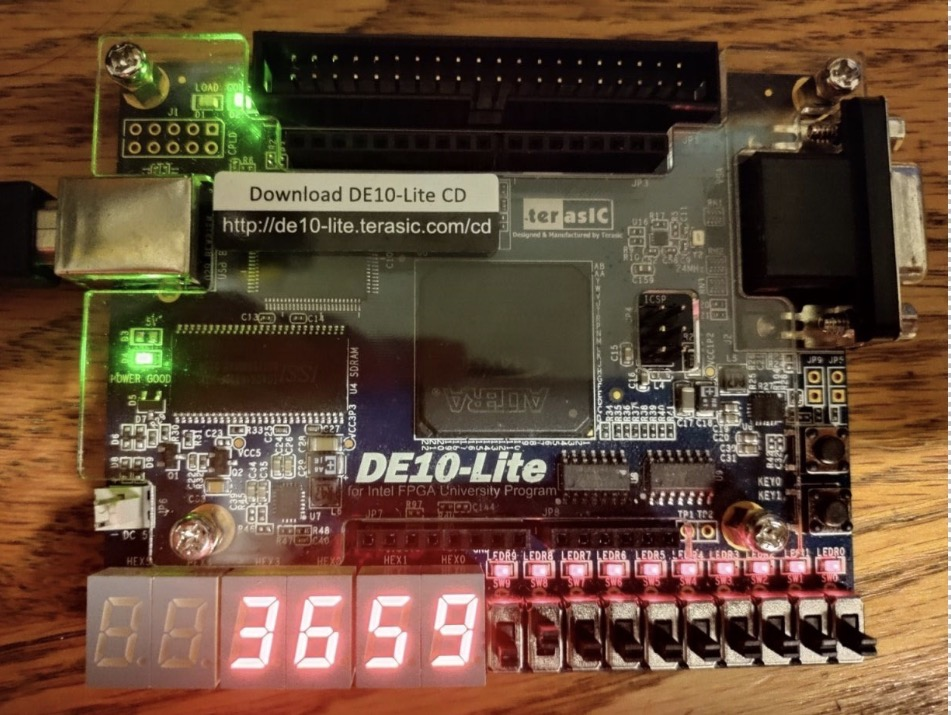
Advanced FPGA design on DE10-Lite that reads the on-chip temperature sensor and displays it on seven segment displays. The core challenge was safely transferring data between two clock domains — a 1 MHz producer (ADC/sensor) and a 50 MHz consumer (display) — using an asynchronous FIFO with Gray code synchronizers to prevent metastability.
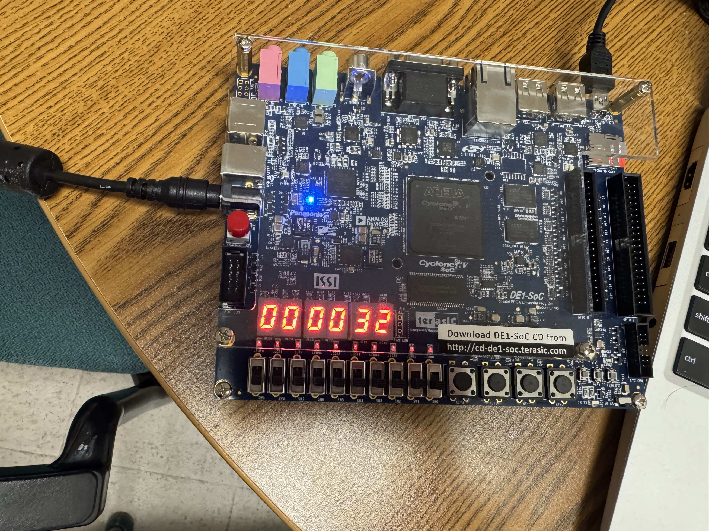
Processor-based SoC designed on the DE1-SoC board using Platform Designer (Quartus). Built the internal system, exported conduit signals for seven segment display control, and connected everything via top-level VHDL integration. Pin assignments were done manually using the Assignment Editor and the design was programmed via a Linux bitstream workflow.
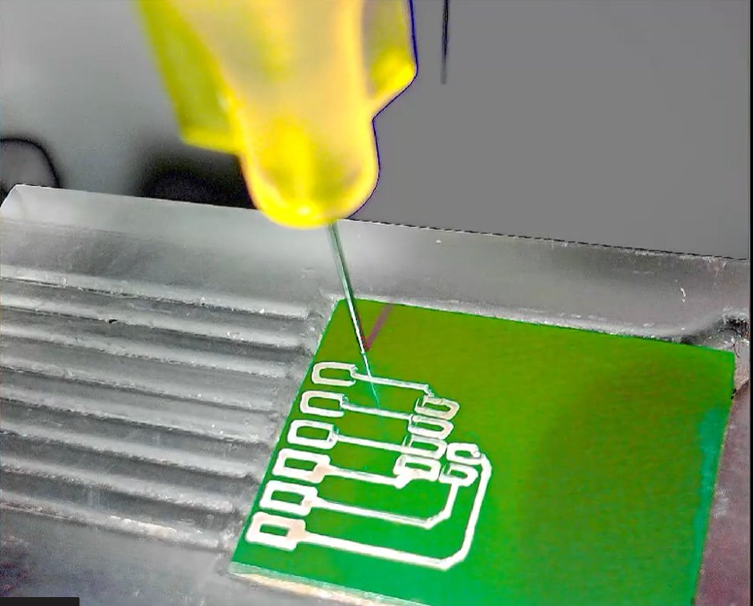
Capstone project — automated system for fabricating microelectrode arrays (MEAs) built with a multidisciplinary engineering team. Contributed to hardware–software integration, motion control, and testing of embedded subsystems including sensors, actuators, and precision alignment components. Used Python for software control and SolidWorks for mechanical design.
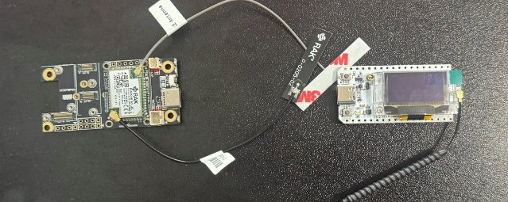
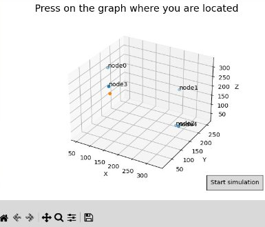
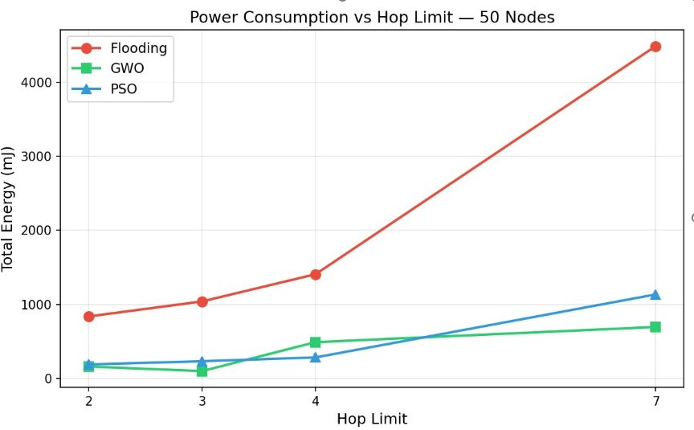
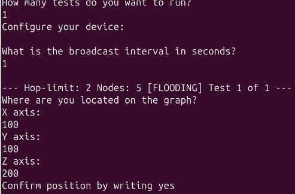
Research project comparing swarm intelligence routing algorithms (Grey Wolf Optimizer and PSO) against Meshtastic's default flood routing on long-range LoRa mesh networks. Built a Python simulation with a 3D node placement GUI, tested across 5–100 node networks, and validated results on real RAK LoRa hardware.
Collaborating with a team to build a 3D horror game in Unity. Currently in early development — core player movement, basic scene layout, and story foundation are underway.